¡Dios salve a la reina!
Todo sobre Bohemian Rhapsody, la película que convirtió a Freddie Mercury en leyenda: brillos, bigote, divismo y mucho rock.
Por Carolina Apellido y Nombre Apellido. Publicado el 24 de septiembre de 2026.
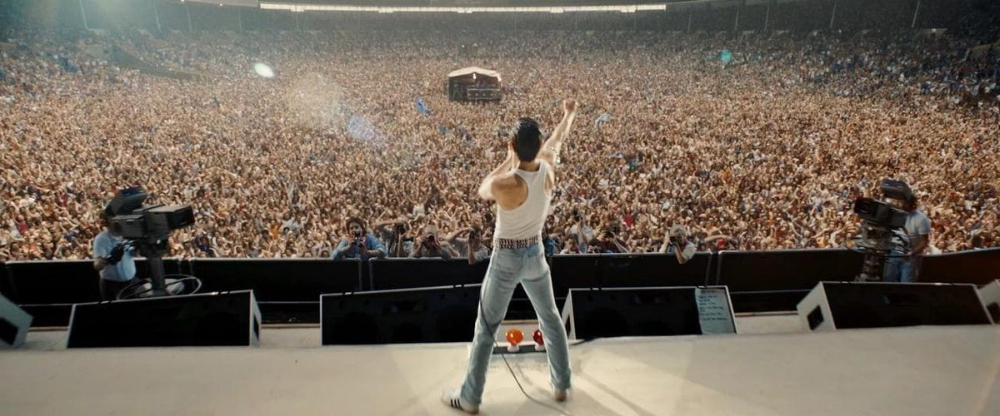
Bohemian Rhapsody es una película biográfica y musical estrenada en 2018 que cuenta la vida de Freddie Mercury, el cantante de la banda británica Queen. El relato arranca en 1970, cuando se forma el grupo, y termina en 1985 con su histórica actuación en el Live Aid, en el viejo estadio de Wembley. En el medio: excesos, peleas, reconciliaciones y un cantante que había nacido para ser la reina del escenario.
Y como todo buen disco de Queen, este artículo tiene sus canciones: cada sección lleva el nombre de un tema de la banda.
Somebody to Love: la historia que cuenta
De Farrokh Bulsara a Freddie Mercury
A comienzos de los años setenta, Farrokh Bulsara es un joven con mucho talento y poco dinero, que trabaja cargando valijas en el aeropuerto de Heathrow. Una noche conoce a Brian May y Roger Taylor, guitarrista y baterista de una banda llamada Smile que acaba de quedarse sin cantante. Freddie se suma, más tarde llega el bajista John Deacon y el grupo pasa a llamarse Queen.
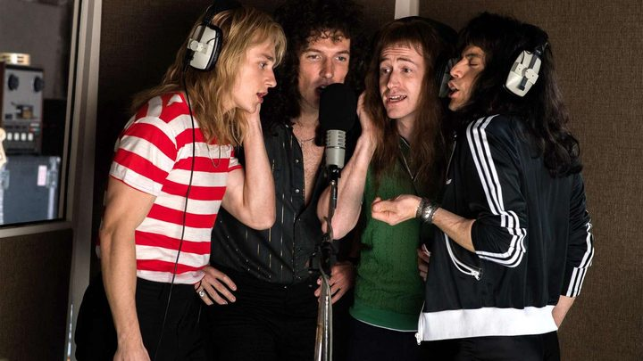
La película muestra cómo el grupo vende su camioneta para grabar su primer disco, cómo consigue un contrato con EMI y cómo se anima a experimentar en el estudio. Uno de los momentos más recordados es la grabación de Bohemian Rhapsody, un tema de seis minutos que mezcla balada, ópera y hard rock, y que la discográfica consideraba demasiado largo para la radio.
Del éxito a la crisis
Con la fama llegan las giras por el mundo y temas como We Will Rock You y We Are the Champions. Pero la historia también muestra el lado difícil: los excesos, la soledad de Freddie, su relación con Mary Austin y la influencia de su representante personal, Paul Prenter. Cuando Freddie decide grabar un disco solista, la banda se distancia. El último tramo narra la reconciliación del grupo justo antes del Live Aid.
Killer Queen: una diva con corona
Si algo deja claro la película es que Freddie Mercury no se conformaba con cantar: quería deslumbrar. Sobre el escenario se movía como si el estadio entero le perteneciera, jugaba con el público, lo desafiaba y lo hacía cantar con él. No por nada fue él quien eligió el nombre de la banda: Queen, una provocación con algo de realeza y mucho de espectáculo.
Los infaltables de Freddie
- El medio pie de micrófono, su marca registrada.
- El puño en alto para hacer cantar a todo el estadio.
- Los trajes ajustados y brillantes de los años setenta.
- El bigote, la musculosa blanca y el jean de los ochenta.
Lejos de los flashes, la diva también tenía su lado tierno: la película muestra su casa llena de gatos, a los que trataba como a su familia. Una frase atribuida a Freddie lo resume todo:
I won't be a rock star. I will be a legend.
(No seré una estrella de rock, seré una leyenda
, frase atribuida a Freddie Mercury.)
La película en números
- Premios Oscar ganados
- 4
- Minutos de duración
- 134
- Millones de dólares recaudados
- 900
- Minutos del show de Queen en el Live Aid
- 20
Ficha técnica
- Título original
- Bohemian Rhapsody
- Año y países
- 2018, Reino Unido y EE.UU.
- Duración
- 134 min.
- Dirección
- Bryan Singer (terminada por Dexter Fletcher)
- Guion
- Anthony McCarten
- Distribuidora
- 20th Century Fox
Reparto principal
Uno de los aciertos de la película es el parecido de los actores con los músicos reales, tanto en lo físico como en su forma de moverse sobre el escenario.
-
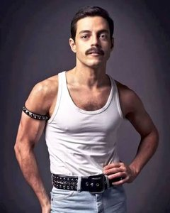
Rami Malek
Freddie Mercury, voz
-
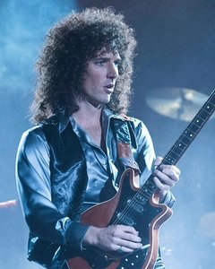
Gwilym Lee
Brian May, guitarra
-
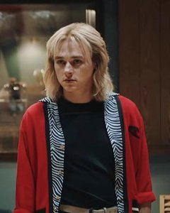
Ben Hardy
Roger Taylor, batería
-
Joseph Mazzello
John Deacon, bajo
Completan el elenco Lucy Boynton como Mary Austin, Allen Leech como Paul Prenter y Mike Myers como un ejecutivo de la discográfica.
Under Pressure: un rodaje accidentado
El proyecto tardó casi una década en concretarse. En un principio, el elegido para interpretar a Freddie era el actor y humorista Sacha Baron Cohen, pero dejó el proyecto por diferencias creativas con Brian May y Roger Taylor, que participaban como asesores.
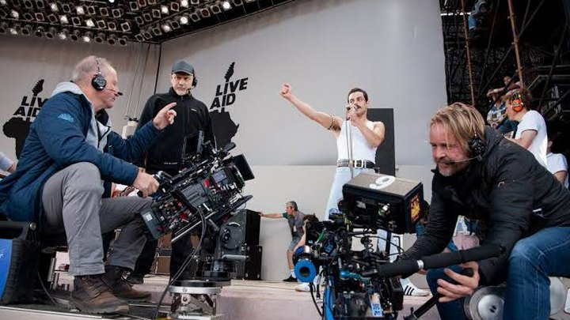
Con Rami Malek confirmado, la dirección quedó a cargo de Bryan Singer, pero en diciembre de 2017 fue despedido por sus ausencias y sus conflictos con el equipo. Dexter Fletcher terminó la película, aunque por las reglas del gremio de directores de EE.UU. Singer quedó como único director en los créditos.
A Kind of Magic: la transformación de Rami Malek
El actor, conocido hasta entonces por la serie Mr. Robot, trabajó durante meses con una profesora de movimiento para imitar los gestos de Freddie en el escenario, y usó una prótesis dental para reproducir los dientes característicos del cantante.
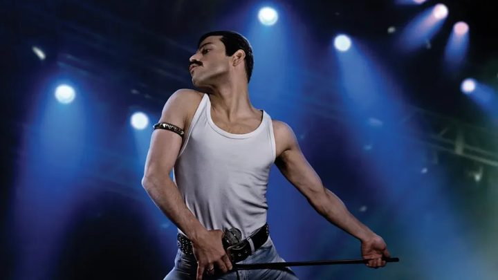
En las escenas de canto se combinaron la voz real de Freddie, la de Malek y la del cantante canadiense Marc Martel. La mayoría de las reseñas coinciden en que, aunque el guion es sencillo, la actuación de Malek sostiene la película.
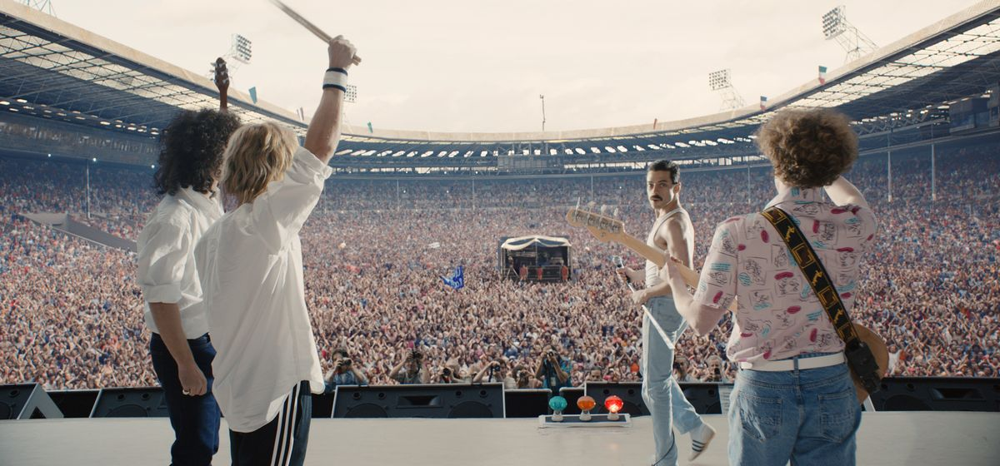
Radio Ga Ga: el gran final en el Live Aid
El Live Aid fue un concierto benéfico realizado el 13 de julio de 1985 para juntar fondos contra la hambruna en Etiopía. Se hizo al mismo tiempo en Londres y en Filadelfia y se transmitió a todo el mundo. La actuación de Queen es considerada por muchos como una de las mejores presentaciones en vivo de la historia del rock.
La película recrea ese show casi completo: la ropa, los movimientos y hasta los vasos sobre el piano. Se construyó una réplica del escenario y la multitud se completó con efectos digitales. Curiosamente, fue una de las primeras escenas que se filmaron.
Galería de escenas
-
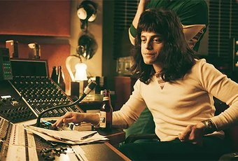
Freddie en la consola del estudio.
-
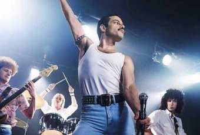
Queen en vivo durante una gira.
-
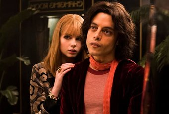
Freddie junto a Mary Austin.
-
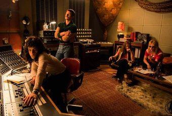
Escuchando las grabaciones del disco.
-
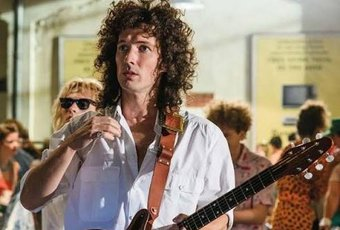
Brian May antes de salir a escena.
-
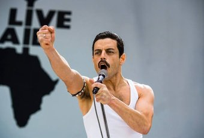
Freddie en el escenario del Live Aid.
We Are the Champions: premios y taquilla
La película fue un éxito enorme de público y se convirtió en la biografía musical más taquillera de la historia del cine. También tuvo un gran recorrido en la temporada de premios.
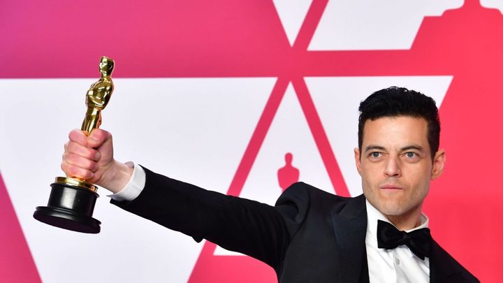
Premios Oscar 2019
- Mejor actor protagonista (Rami Malek).
- Mejor montaje.
- Mejor edición de sonido.
- Mejor mezcla de sonido.
Otros premios
- Globo de Oro a mejor película dramática y a mejor actor dramático.
- Dos premios BAFTA: mejor actor y mejor sonido.
Liar: ficción y realidad
Como toda película basada en hechos reales, Bohemian Rhapsody se toma algunas licencias creativas para que la historia sea más dramática:
- En la película, Freddie les cuenta a sus compañeros que está enfermo antes del Live Aid. En la realidad, el diagnóstico de VIH llegó varios años después.
- Queen nunca se separó oficialmente antes de 1985: la banda siguió grabando y tocando en vivo.
- La canción Fat Bottomed Girls suena en una gira de 1975, pero fue compuesta en 1978.
Estos cambios generaron críticas de los fans más fieles. Sin embargo, Brian May contó que la película lo emocionó hasta las lágrimas y que, en su opinión, a Freddie le habría gustado.
¿Vale la pena verla?
Sí. Aunque no es un documental, es una puerta de entrada ideal para conocer a Queen, y para quienes ya son fans es una oportunidad de volver a escuchar sus canciones como si estuvieran en el estadio. Los últimos veinte minutos, por sí solos, justifican la película.